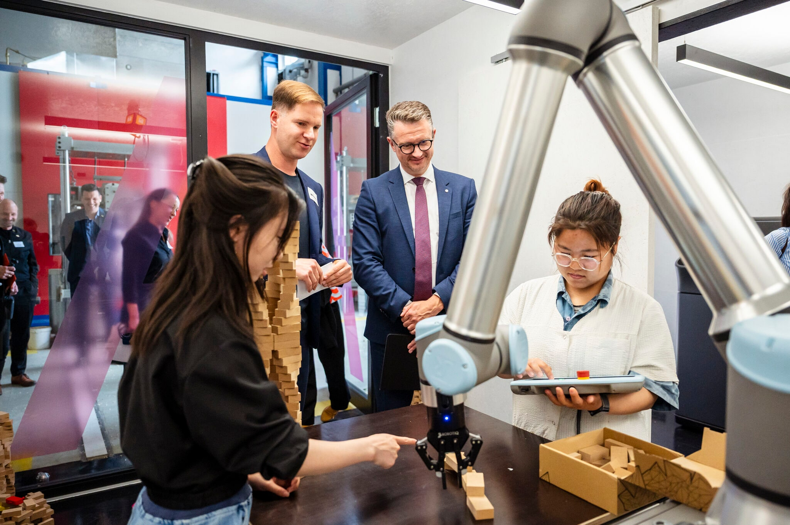

Teaching
01 / Bauhaus.Module
From Parameters
to Things
Winter semester 2026/27 · Bauhaus-Universität Weimar
Student-led course instructor · Mentor: Lotta Stöver
I lead this student-led course in parametric design and material experimentation. We work with Rhino, Grasshopper, laser cutting, 3D printing and clay, moving between digital studies and physical prototypes.
Course listingCourse & Guest Lectures
Course poster / PDF02 / Student assistance
Robotic Tectonics
I support computational design, robotic assembly and material exploration as a student assistant at Bauhaus-Universität Weimar.
